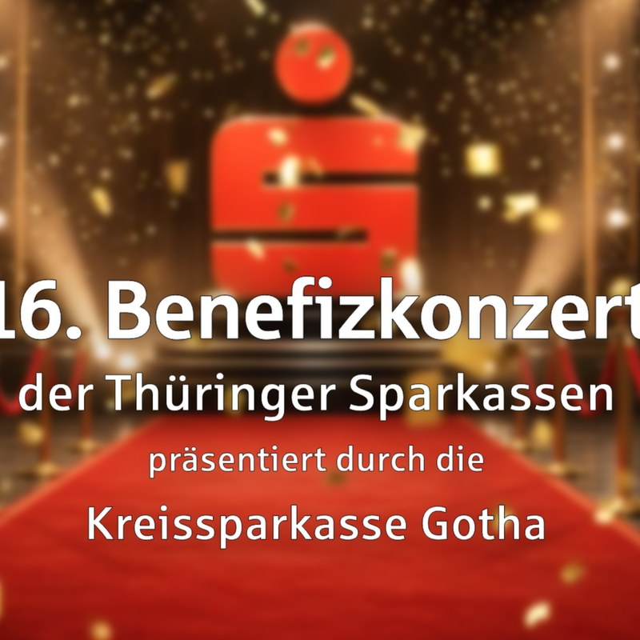
x@motion
Medienproduktion aus Westthüringen
Eventfilm, Imagefilm und Social Media Content – geplant, gedreht, sauber fertig geliefert.
x@motion steht für kreative, authentische und technisch hochwertige Videoproduktion mit Herz und Haltung. Wir sind in Westthüringen zu Hause – und begleiten von hier aus Events, Unternehmen und Institutionen mit bewegten Bildern, die bleiben.
Mein Name ist Steffen Schmoock. Gemeinsam mit einem Netzwerk aus erfahrenen Medienprofis produzieren wir Filme, die nicht nur funktionieren, sondern berühren – von der ersten Idee bis zum finalen Schnitt.
Ob Imagefilm, Aftermovie, Eventdokumentation, Social Media Content oder Luftaufnahmen: Wir denken mit, bringen Struktur ins Projekt und erzählen Ihre Geschichte visuell so, wie sie es verdient hat – mit klarem Konzept, Gespür für den Moment und einem Auge für Details.
Kreativ. Partnerschaftlich. Präzise.
So entstehen Filme, die wirken – in Westthüringen und überall, wo gute Geschichten erzählt werden wollen.
Ihr nächstes Videoprojekt – jetzt starten.
Hier gibt es persönliche Beratung und ein unverbindliches Angebot.
Projektanfrage sendenUnsere Leistungen auf einen Blick
Was wir können. Was wir lieben. Was Sie weiterbringt.
Videoproduktion
Idee. Umsetzung. Wirkung.
Wir produzieren Filme, die mehr sind als schöne Bilder. Ob Imagefilm, Doku oder Kampagnenclip – wir erzählen Geschichten mit Konzept, Kamera und Schnitt. Klar strukturiert, kreativ gedacht und handwerklich präzise.
Mehr zum ImagefilmEventmovie
Live dabei – und danach erlebbar.
Wir begleiten Ihre Veranstaltung mit Kamera, Drohne und Gespür für das Wesentliche. Ob Festival, Firmenfeier oder Messe: Wir halten Emotionen, Stimmen und Höhepunkte fest – als Eventfilm, der vor Ort wirkt und danach nachhaltig weiterlebt.
Mehr zum EventvideoSocial Content
Regelmäßig sichtbar.
Wir produzieren Social-Media-Content mit Plan, Kamera und Gespür für Zielgruppen. Ob Unternehmen, Event oder Marke: Wir entwickeln kurze Clips, die Aufmerksamkeit erzeugen und Wiedererkennung schaffen – für Kanäle, die genutzt werden.
Zu den Social-Media-PaketenLuftaufnahmen
Perspektivwechsel inklusive.
Wir erstellen hochwertige Luftaufnahmen mit moderner Drohnentechnik – rechtssicher, stabil und gestochen scharf. Ob Event, Imagefilm oder Dokumentation: Wir liefern die Perspektive, die Eindruck macht und in Erinnerung bleibt.
Mehr zu LuftaufnahmenKonzept & Planung
Idee vor der Kamera.
Wir entwickeln Inhalte, Formate und Abläufe mit klarem Ziel und realistischem Aufwand. Ob einzelnes Video oder Serie: Wir denken Projekte vor, strukturieren Inhalte und schaffen die Grundlage für eine saubere, effiziente Umsetzung.
Postproduktion
Aus Momenten wird ein Film.
Wir schneiden Ihr Material zu einem stimmigen Gesamtbild – inklusive Tonmischung, Farbkorrektur und Dramaturgie. Ob eigenes Rohmaterial oder von uns gedreht: Wir bringen alles präzise auf den Punkt – in Ihrem Stil.
Livestreaming
Live dabei. Überall.
Wir streamen Ihr Event live ins Netz – stabil, zuverlässig und mit dem Setup, das zu Ihnen passt. Ob Tagung, Konzert oder hybrides Format: Wir sorgen für klare Bilder, sauberen Ton und einen reibungslosen Ablauf.
Auftragsdrehs
Wir liefern die Bilder.
Wir übernehmen den Dreh für Ihr Projekt – ob Event, Interview oder Social Content. Sie erhalten strukturiertes, hochwertiges Rohmaterial, das Sie flexibel weiterverarbeiten können. Klar, sauber und ganz nach Ihren Vorgaben.
Mehr zum Auftragsdreh
Gemeinsam Geschichten erzählen
Diese Kunden zählen auf x@motion
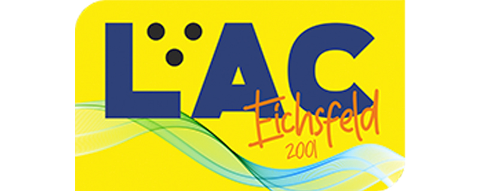
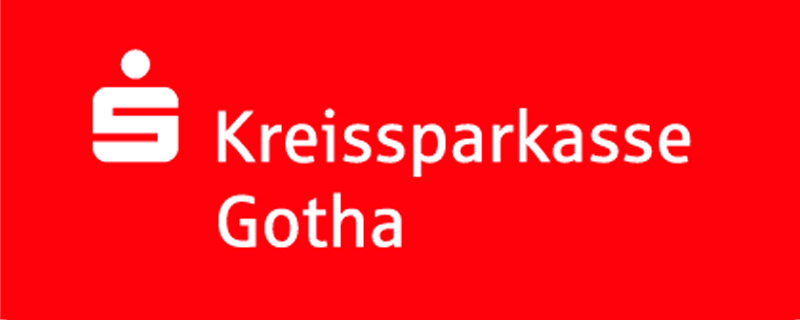
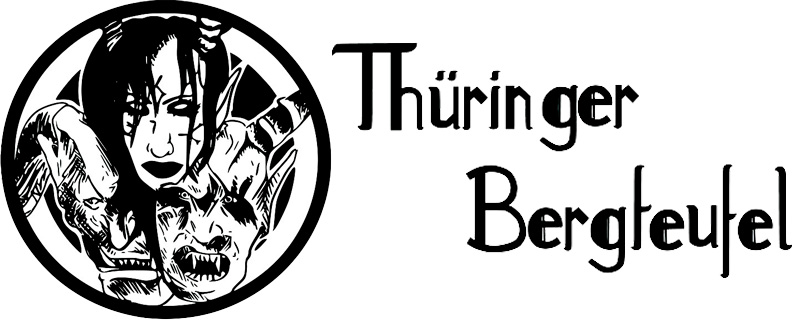
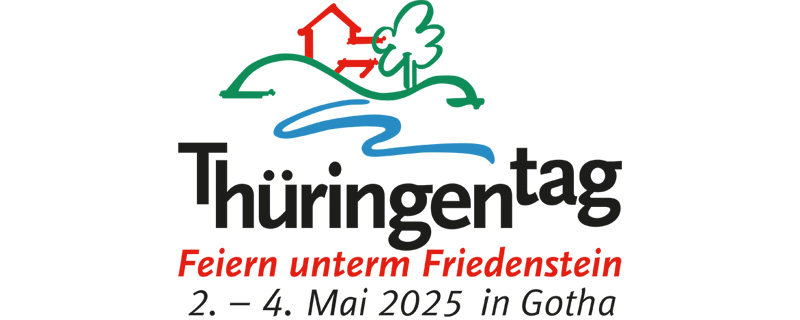
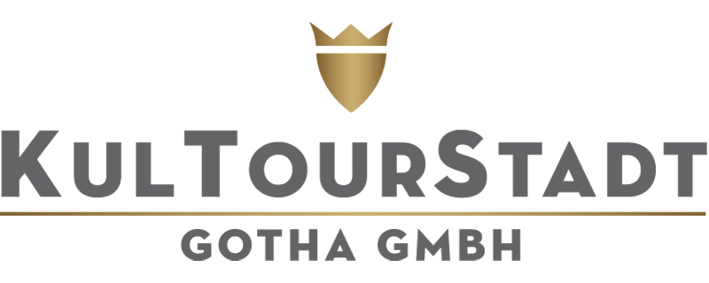
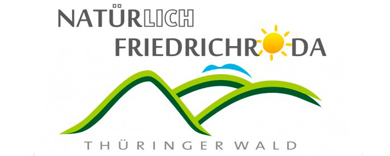
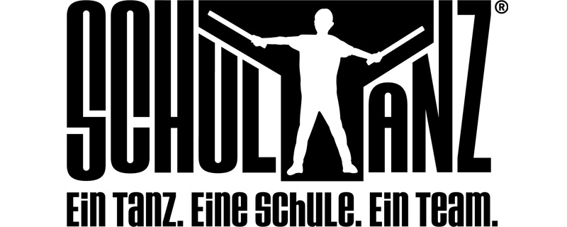
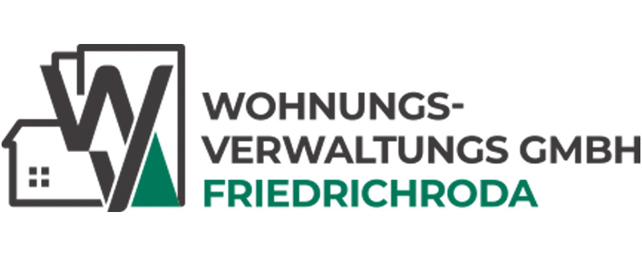
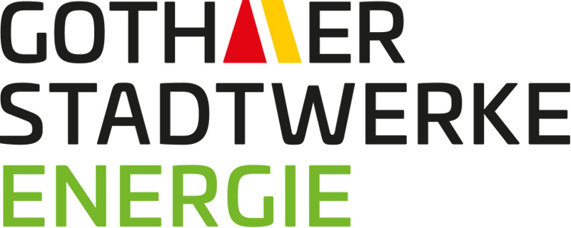
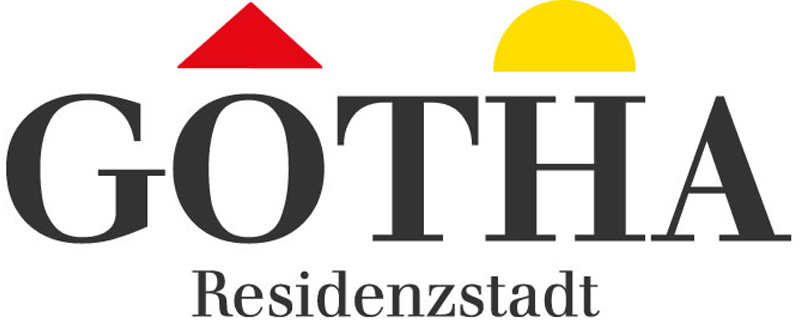
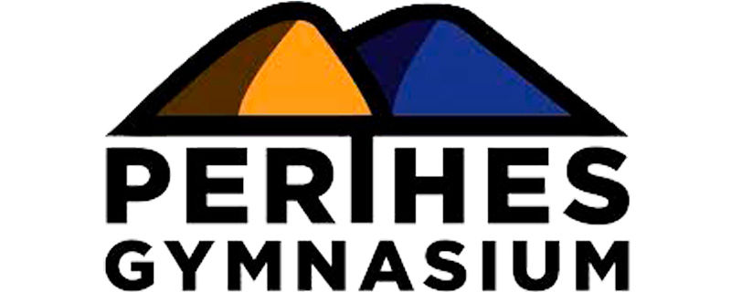
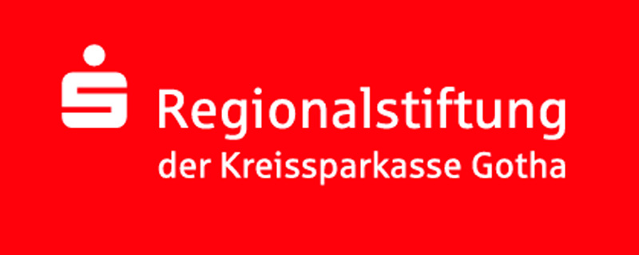
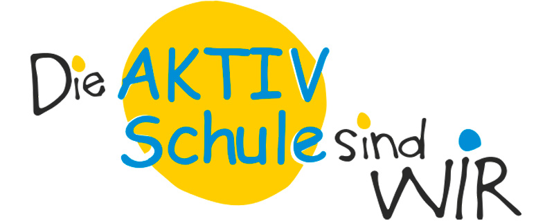
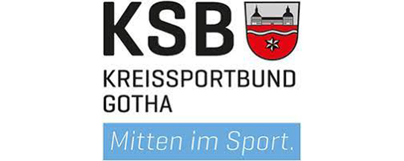
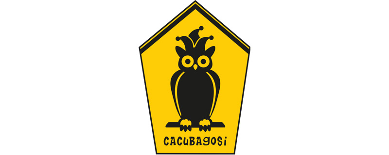
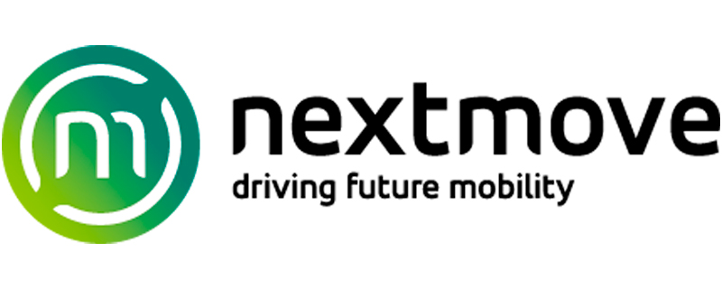
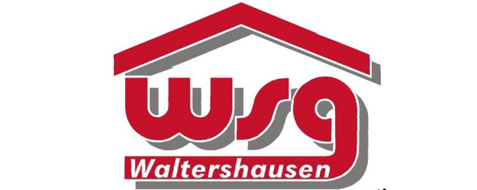
Jede Produktion beginnt mit Vertrauen.
Youtube
Unser Kanal gibt ein paar Einblicke in die Bandbreite unserer täglichen Arbeit.
Berichterstattung und Begleitung der Feierlichkeiten anläßlich "100 Jahre Landkreis Gotha" Illumination im Park.
Das ganze Video und mehr gibt es auf unserem Youtube-Kanal!
Projekte, die bewegen
Ausgewählte Arbeiten: frisch, aktuell und erfolgreich abgeschlossen.
33. Sportgala des Landkreises Gotha 2026 — Mehrkamera-Produktion in Ohrdruf
Zum Projekt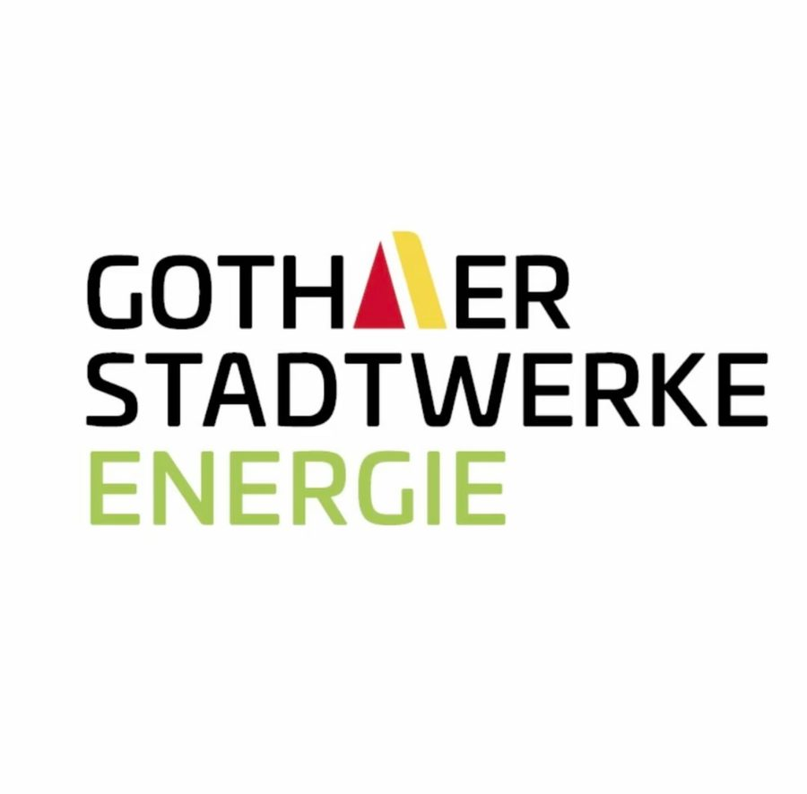
Netzwerkveranstaltung der Stadtwerke Gotha – x@motion Medienproduktion liefert Bilder & Schnitt
Zum Projekt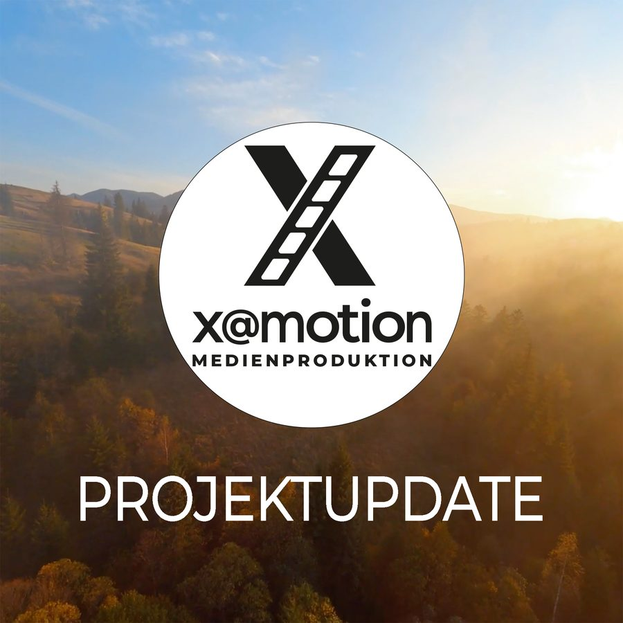
Kürbisse Glühen 2025 – Social-Media-Reihe und Aftermovie von x@motion
Zum Projekt
Kreisseniorentag 2025 in Ohrdruf – x@motion Medienproduktion erneut als Medienpartner dabei
Zum Projekt
Hochzeitszauber im Berghotel Eisenach – Unser Imagefilm-Projekt
Zum ProjektFilm ab für Ihre Idee!
Wann erzählen wir Ihre Geschichte?
x@motion Medien Blog

Social-Media-Produktionspakete (S–XL)
Regelmäßige Inhalte. Klarer Leistungsrahmen. Planbar im Monat.